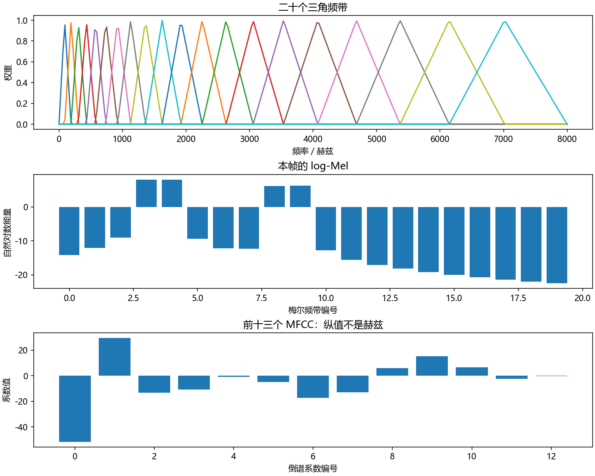
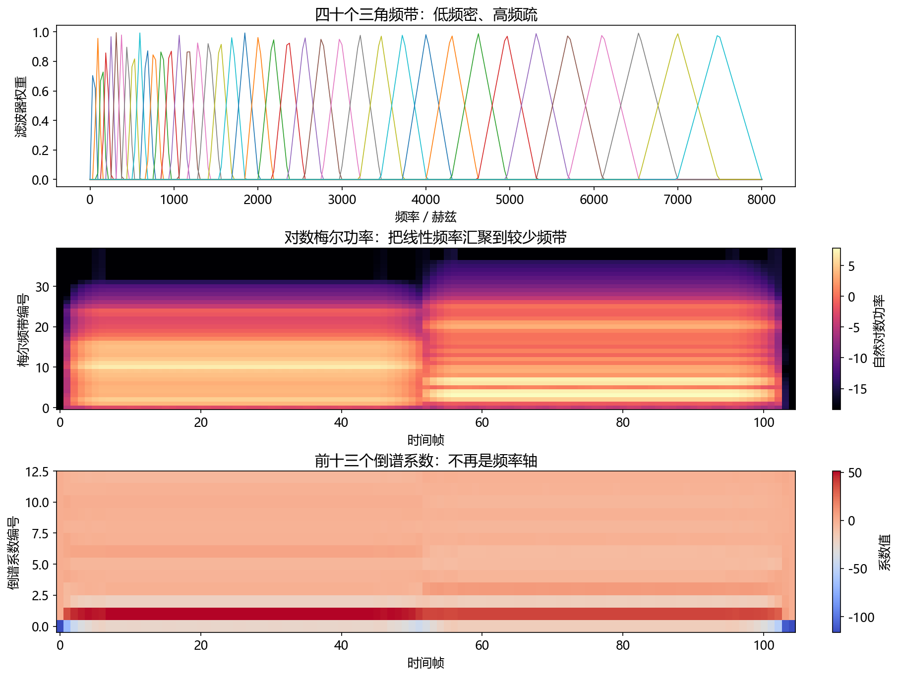

看图理解 · 跟着推演 · 对照真实结果
第06课 · 从频谱走到log-Mel与MFCC
先建立直觉，再逐节讲原理、代码与结果；章节目录可定位学习。用一帧合成音跟踪每一步的形状与意义，分清特征、音高和共振峰。
从直觉、原理，到代码与结果
本版保留导览小实验，增加教材逐节精讲、代码分段阅读和结果解释。三个项目另有本次真实模型短推理，第 12 课增加实际训练曲线。按右侧小节分次学习即可，不必一次看完。
完整文字、规范公式和注释代码仍在上方“读完整图文”。视频中的历史报告、教学算例与本次实测分别标明，短演示不冒充完整重训或设备验收。
先修：第05课：FFT频率轴、窗函数和幅度与功率区别。
- 能手算一个Mel频带加权能量
- 能解释log-Mel与MFCC的轴和信息损失
- 能为模型写清前端输入契约
本课覆盖清单与证据范围
- 1. 为什么不直接把所有数字都交给模型
- 2. Mel 频率：换一把尺子，再做频带汇总
- 3. 为什么取对数，MFCC 又多做了什么
- 4. 核心代码：只用 NumPy 做一帧 log-Mel 和 MFCC
- 5. F0 与共振峰：谁在振，哪里在共鸣
- 6. CMVN、预加重和差分：能用，但不要无条件加
- 7. 输入配置清单，比一个模型名称更有用
- 8. 跟着做一次特征排错
- 9. 五道自测与参考答案
结果从哪里来
- 导览中的小算例实际执行
- 原教材逐节讲解；正文代码/公式/图保留
单帧合成音使用HTK风格Mel和峰值型三角权重，数值不保证与任何库的默认前端一致；本例没有识别文字、合成语音或实现生产级音高估计。
新版视频时间轴已改变，单独记录续播位置；学习计划的完成勾选保持不变。
跟着运行：注释代码、实际输出与结果图
下面代码在生成本站时实际执行。这里只是教学小实验，不是完整模型训练或业务设备测评。
import numpy as np
fs, N, B = 16000, 512, 20 # 一帧32毫秒，20个频带
t = np.arange(N) / fs
x = 0.5*np.sin(2*np.pi*500*t) + 0.2*np.sin(2*np.pi*1500*t)
freq = np.fft.rfftfreq(N, 1/fs)
p = np.abs(np.fft.rfft(x * np.hanning(N))) ** 2
m = np.linspace(0, 2595*np.log10(1+8000/700), B+2)
hz = 700 * (10 ** (m/2595) - 1) # Mel端点映射回Hz
a, b, c = hz[:-2, None], hz[1:-1, None], hz[2:, None]
bank = np.maximum(0, np.minimum((freq-a)/(b-a), (c-freq)/(c-b)))
energy = bank @ p # (20,257)乘(257,)，每带一个加权和
log_mel = np.log(np.maximum(energy, 1e-10))
band = np.arange(B)
k = np.arange(13)[:, None] # 保留13个倒谱系数
dct = np.cos(np.pi*(band+0.5)*k/B) * np.sqrt(2/B)
mfcc = (dct * np.where(k == 0, 1/np.sqrt(2), 1)) @ log_mel
print('谱/Mel/MFCC:', p.shape, log_mel.shape, mfcc.shape)
print('前四个MFCC:', np.round(mfcc[:4], 2))
本次实际输出
谱/Mel/MFCC: (257,) (20,) (13,) 前四个MFCC: [-51.57 29.47 -13.29 -10.67]

精讲中的代码、运行步骤与大图
代码片段用于逐行理解；真实运行结果仅限明确标注“本次实际”的部分。教材历史图保留原有实验范围。
代码精读 04 · 第1–18行
源码精读 / 教学片段，需配套环境与上下文，不等同于独立脚本。
import numpy as np
fs, n_fft, bands = 16000, 512, 20
t = np.arange(n_fft) / fs
x = 0.5*np.sin(2*np.pi*500*t) + 0.2*np.sin(2*np.pi*1500*t)
power = np.abs(np.fft.rfft(x * np.hanning(n_fft))) ** 2
freqs = np.fft.rfftfreq(n_fft, 1/fs) # (257,)，每个格点的 Hz
# 在 Mel 尺度等间隔取端点，再映射回 Hz。
mel_max = 2595*np.log10(1 + (fs/2)/700)
mel_points = np.linspace(0, mel_max, bands + 2)
hz_points = 700*(10 ** (mel_points/2595) - 1)
bank = np.zeros((bands, len(freqs)))
for m in range(bands):
left, center, right = hz_points[m:m+3]
rising = (freqs-left)/(center-left) # 三角形左侧上升
falling = (right-freqs)/(right-center) # 右侧下降
bank[m] = np.maximum(0, np.minimum(rising, falling))代码精读 04 · 第19–36行
源码精读 / 教学片段，需配套环境与上下文，不等同于独立脚本。
energy = bank @ power # (20,257) @ (257,) -> (20,)
log_mel = np.log(np.maximum(energy, 1e-10))
# 构造正交归一化 DCT-II，保留前 13 个系数。
k = np.arange(13)[:, None] # (13,1)：系数编号
m = np.arange(bands)[None, :] # (1,20)：Mel 频带编号
dct = np.cos(np.pi*(m+0.5)*k/bands) * np.sqrt(2/bands)
dct[0] /= np.sqrt(2) # 第 0 行采用不同归一化系数
mfcc = dct @ log_mel # (13,20) @ (20,) -> (13,)
print("功率/Mel/MFCC 形状:", power.shape, log_mel.shape, mfcc.shape)
print("全部数值有限:", np.isfinite(mfcc).all())
# 绘制刚计算的一帧特征，不把单帧图误当成整句语音。
from pathlib import Path
import matplotlib
matplotlib.use("Agg")
import matplotlib.pyplot as plt
plt.rcParams.update({"font.family": "Microsoft YaHei", "axes.unicode_minus": False})代码精读 04 · 第37–46行
源码精读 / 教学片段，需配套环境与上下文，不等同于独立脚本。
assert Path("tutorial/chapters").is_dir(), "请在 audio-course-zh 根目录运行"
fig, axes = plt.subplots(3, 1, figsize=(10, 8), layout="constrained")
axes[0].plot(freqs, bank.T)
axes[0].set(xlabel="频率／赫兹", ylabel="权重", title="二十个三角频带")
axes[1].bar(np.arange(bands), log_mel)
axes[1].set(xlabel="梅尔频带编号", ylabel="自然对数能量", title="本帧的 log-Mel")
axes[2].bar(np.arange(13), mfcc)
axes[2].set(xlabel="倒谱系数编号", ylabel="系数值", title="前十三个 MFCC：纵值不是赫兹")
fig.savefig("tutorial/figures/ch06_single_frame_features.png", dpi=150)
plt.close(fig)结果读图 04 · 4. 核心代码：只用 NumPy 做一帧
原教材运行记录

原教材已存图 不是本次新测 先确认实验范围 再解释坐标与单位
结果读图 04 · 4. 核心代码：只用 NumPy 做一帧
原教材运行记录

原教材已存图 不是本次新测 先确认实验范围 再解释坐标与单位
闭卷自测：权重[0.2,1,0.2]与功率[5,2,10]的频带能量是多少？16 kHz下周期100点的F0是多少？
加权能量为0.2×5+1×2+0.2×10=5；F0=16000/100=160 Hz，有无稳定周期还需单独判断。
逐字讲稿 · 可定位回看
整理账本时，你可以把很多小项归到几类支出。类别总额更容易读，但小项细节会减少。频带汇总也有类似取舍，不过其权重由具体滤波器定义，不能随意分组。
做一个简化的单频带练习：三个频率点的功率为 4、9、1，权重分别为 0.25、0.5、0.25。 逐项相乘：得到 1、4.5、0.25；再相加，频带能量为 5.75。这就是一次加权汇总，不是让三个频率互相抵消。
实际 Mel 特征有很多这样的频带，并常对能量取对数。MFCC 还会对这组对数能量做进一步变换；先把这些操作分清，再记缩写。 三点权重只是演示乘加，不是一套完整的 Mel 配置。真实模型还需要匹配采样率、FFT、频带数、归一化和对数规则。
今天仍然自己合成一小段声音，里面有五百和一千五百赫兹两个分量。我们要追踪它从五百一十二个采样，变成频谱，再变成二十个频带数字的过程。
原始波形当然也可以直接给某些模型，但另一些模型使用log-Mel，或者学习得到的音频符号。不同表示服务不同任务，不是所有现代模型都必须经过MFCC。
像把文章整理成主题笔记，特征突出一部分结构，也可能舍弃细节。关键问题是每一步保留了什么、丢了什么，以及模型训练时究竟使用哪一种表示。
一万六采样率下，五百一十二个点覆盖三十二毫秒。实数FFT返回二百五十七个非负频率格点，每格间隔三十一点二五赫兹。
本例先乘Hann窗，再取FFT系数绝对值的平方。它是用于特征变换的功率型谱值，没有做物理声功率校准，也不是已经按赫兹归一化的功率谱密度。
所以图表里说能量，只是在已声明的数字前端定义下比较。跨库对比时，窗、FFT和单边谱标度都会影响数值，不能只看数组长度相同。
普通FFT按赫兹等间隔取格点。Mel尺度换了一把非线性的尺子，在Mel上等间隔取点，再换回赫兹后，低频通常更密，高频更宽。
本课使用HTK风格公式，一千赫兹约对应一千Mel，但不能由这个特殊值推断所有频率下两种数值都一样。不同实现还可能用另一种定义和归一化。
我们用相邻三个端点组成一个三角形：中间权重最高，两边逐渐降到零。一个频带不是只抓最强的那根线，而是把附近多个功率谱值按权重加起来。
用三个格点做手算：功率分别是一、四、九，三角权重分别零点五、一、零点五。逐项相乘得到零点五、四、四点五，相加就是九。
这既不是取最大值九的普遍规则，也不是把三个数直接平均。这个例子恰好加权和也是九，换一组数据就能看出它与取最大值不同。
矩阵写法里，每行是一只频带篮子，每列对应一个FFT格点。二十乘二百五十七的权重矩阵，乘二百五十七维功率向量，得到二十个能量值。
频带能量变化可能很大，取对数可以压缩动态范围。能量小于一时，自然对数是负数，但能量本身仍然为正；不要把负log-Mel判断成坏数据。
零的对数没有有限值，所以这里把低于十的负十次方的能量抬到地板。这个设置会影响很低能量区域，训练和推理必须一致。
本课使用自然对数，不是十分贝功率对数，也不是二十分贝幅度对数。它们可以按明确公式换算，但不能在模型前端里不作说明地互相替换。
MFCC在log-Mel之后，沿频带方向做离散余弦变换。它把二十个频带的变化形状，表示成一组由慢到快变化的余弦模式系数。
常保留低阶系数，突出较平滑的频谱包络，同时丢掉一些精细结构。本例保留十三个，不能再把第五个系数标成五百赫兹，因为它已不是一个直接的频率格点。
这一步不是沿时间做FFT，也不是把频率取倒数。是否保留零号系数、如何归一化、是否做额外处理，都会影响结果，十三维这个名字本身远远不够。
前六行生成一帧合成音并计算窗后的功率谱。这里没有下载真实语音，没有调用预训练模型，所以输出只能说明这个教学算例的前端变换。
第七到第十行在Mel尺子上取端点，换回赫兹，再用广播构造二十个三角频带。接着矩阵乘法把二百五十七个谱值汇总成二十个能量，再取对数。
最后建立十三行的余弦矩阵。零号系数使用不同归一化，再乘log-Mel得到十三个MFCC。输出形状应依次是二百五十七、二十、十三，先核对这一点再比较数值。
现在的折线图是这段代码实际得到的一帧log-Mel。横轴只有频带编号，不能把编号十读成十赫兹，也不能把它当成第十个时间帧。
靠近输入频率的频带通常能量更高，但相邻频带有重叠，Hann窗也影响频谱形状，因此不是把两根纯音简单变成两个孤立的数字。
如果逐帧重复相同流程，才会得到时间乘频带的二维图。MFCC打印值是另一种表示，不应把它们与这条log-Mel曲线混画成同一种物理量。
基频F0描述近似周期性激励的重复速度，谐波常出现在它的整数倍位置。最强的谱峰可能是某个谐波，不一定就是基频。
共振峰主要描述声道共振造成的谱包络峰区。保持近似音高还能更换元音，正因为重复节奏与声道形状并不是同一件事。
如果用自相关估计音高，不能直接对所有延迟取最大，因为零延迟通常最大。还要设置合理范围、判断有声无声，并处理倍频和半频错误。摩擦音可能根本没有稳定F0。
均值方差归一化可以减少一些特征偏移，但整句、说话人、训练集或滑动窗口的统计不是一回事。用测试集拟合统计，可能造成数据泄漏。
预加重会改变高低频的相对关系。某些传统前端用它，不代表所有现代模型都应该加。训练时没有这一步，推理时突然添加，可能破坏输入分布。
时间差分特征有时使用未来帧。离线任务可以这样做，流式系统则必须计入前瞻。整句归一化如果偷看未来，也不能直接宣称是严格实时输入。
设两个前端都输出八十维，一个用自然对数功率，一个用幅度分贝。接口形状相同，程序不会自动报单位错误，但模型看到的数值分布已经变了。
至少记录采样率、声道、窗长、帧移、FFT长度、窗类型、是否中心补零、Mel定义、频带范围、对数底和地板，以及归一化规则。
如果每秒特征帧数从一百变成五十，先查帧移和内部下采样，不要立刻插值拉长。声音时长、文字对齐和声码器输出常有时间对应，形状对了不代表语义对了。
暂停计算：权重零点二、一、零点二，功率五、二、十，加权能量是多少？答案是一加二加二等于五，不是先对三项取对数再相加。
再算一个周期题：采样率一万六，周期一百点，F0是多少？一万六除一百得到一百六十赫兹。但如果帧没有明显周期，数值估计还需要置信度判断。
课后为一个音频模型写一页输入契约，保留固定测试音频的前端结果。改变对数底或归一化时，说明哪些数字改变、为什么改变，不要只报告特征维度没变。
一帧功率谱有二百五十七个频点，八十个Mel滤波器可以排成八十乘二百五十七的矩阵。与二百五十七乘时间帧的功率谱相乘，就得到八十乘时间帧的频带能量。
静音频带可能得到零，直接取对数会出现负无穷。需要与训练时一致的下界或者log1p规则。二者数值并不相同，不能为了方便在部署时随意替换。
如果模型训练时用了特征均值和标准差，推理必须复用同一统计。把每条短录音单独重新标准化可能改变分布；把测试数据用于拟合训练统计则是另一种数据泄漏。
浊音的频谱常有一组近似等间距的谐波。基频可能不强，甚至第一谐波很弱，因此最大峰法容易跳到两倍基频。看周期、谐波间距以及清浊判断更稳妥。
共振峰描述声道共振形成的频谱包络峰，不是每一个细小谐波峰。元音变化可以在基频差不多时发生，这有助于理解音高和音色为什么不是同一件事。
摩擦音或噪声没有稳定周期时，音高估计应允许无声或无效标记，而不是硬给一个赫兹数字。评测要区分有声段音高误差和清浊判断错误。
原始音频一秒可能有 16000 个点。特征提取会把它整理成更适合某些任务的表示，例如每 10 ms 描述一次频率结构。像给一段文章写按主题归纳的笔记：
字数变少，结构更清楚，但也可能丢掉细节。这个类比的限制是，笔记没有唯一标准；音频特征同样必须服务具体任务，不能说“越压缩越聪明”。
现代模型既有使用波形的，也有使用 log-Mel 的，还有使用学习到的离散音频 token 的。这里讲传统特征，是为了理解输入与误差来源，不是宣称所有现代语音模型都必须用 MFCC。
普通 FFT 的 Hz 格点等间隔。Mel 尺度试图以一种非线性频率刻度组织频带，常使低频处更密、高频处更宽。它是听觉启发的尺度，不等于精确复制人耳。不同实现可能使用 HTK 或 Slaney 等定义，频带归一化也可能不同。librosa 的 Mel 滤波器官方文档明确区分了这些选项。
f 的单位是 Hz，m 是 Mel 数值。代入 1000 Hz，得到约 1000 Mel；但不要因此误以为所有频率下两把尺子都相等。
把若干三角形权重放在 FFT 频率轴上，计算每个频带的加权能量： b 表示频带索引，避免与上文的 Mel 数值 m 混淆；P[k] 是功率谱，H 是 Mel 滤波器组。若一个小例子的三点功率是 [1,4,9]，某频带权重是 [0.5,1,0.5]，则能量为 0.5+4+4.5=9。它不是取三个数最大值，也不是先把 dB 数值直接相加。
功率变化范围很大，对数可以压缩动态范围。ln(E+varepsilon) 使用自然对数，10以十为底的对数 (（E）除以（E下标ref）) 是以 10 为底的相对功率 dB，两者不能在没有换算时混用。varepsilon 避免 ln(0)，但它会影响极低能量区域；训练和推理必须一致。
本课代码实际采用 ln (最大值(E,varepsilon))，即把低于阈值的能量抬到地板，再取对数；这与给所有能量都加 varepsilon 并不完全相同。
MFCC 在 log-Mel 之后，再沿 Mel 频带轴做离散余弦变换 DCT，常保留前若干系数。DCT 不是沿时间轴做的 FFT。保留低阶系数相当于突出频谱包络较平滑的变化，细节会被舍弃。MFCC 图纵轴是倒谱系数编号，不是 Hz，也不是 Mel 频带编号。 第 0 个系数常与 log-Mel 总体水平相关，但是否保留、是否用能量替换、是否进行 liftering，都取决于实现。别人说“13 维 MFCC”还远远不够，你需要完整的前端配置。也不要把倒谱的“倒”理解成对频率取倒数。
下面从一段 32 ms 的合成音开始。它是一帧示例，不含真实语音，也不调用预训练模型。三角滤波器采用峰值型权重；它不保证数值与任何默认库配置完全相同。
代码里的 power=abs(FFT)2 是未做物理校准的功率型谱值，用于说明特征变换；它不是以瓦特计的声功率，也不是已经按 Hz 归一化的功率谱密度。跨库比较数值时，还要检查 FFT、窗函数及单边谱的归一化约定。
这张图与刚才代码参数完全一致，在课程根目录运行整段即可重建，需要 Matplotlib。上图横轴是 Hz，中、下图横轴则是频带/系数编号。先指出哪一张图还能定位到具体 Hz，再解释后两张为什么不能直接当作原始频谱；这是读懂特征图的重要练习。
先看 @ 两边的形状：滤波器组的每一行对应一个频带，乘功率向量就是这个频带的加权和；DCT 矩阵的每一行对应一个倒谱系数，乘 log-Mel 又是一次加权和。预期形状为 (257,)、(20,)、(13,)，有限性检查应为 True。
这比一开始就背“某个 API 返回 80 维特征”更能让你知道程序在做什么。
这张图由 features_lab.py 实际生成，使用 audio_core.py 中的特征函数。它是上述计算的多帧扩展，配置为 40 个 Mel 频带和前 13 个 MFCC，而不是本段 20 频带单帧代码的输出。上图看三角频带：高频更宽，低频更密； 中图横轴时间帧、纵轴 Mel 频带，亮色表示较大 log 能量；下图纵轴已经换成 MFCC 编号，不能再把第 10 行读成某个具体频率。中间约第 50 帧的变化来自合成信号的切换，不是识别出了某个汉字。
arange按固定步长生成索引。若随后除以采样率，才把采样点编号换成秒。 正弦或余弦的输入是弧度。频率乘以时间再乘二派，才得到相位；幅度系数控制波形大小。 频域变换把一段时域样本变成复数系数。实部和虚部一起携带幅度与相位，不应只保留绝对值后直接当作原信号。
先看中文注释：(257,)，每个格点的 Hz；在 Mel 尺度等间隔取端点，再映射回 Hz。。linspace在两个端点间生成指定数量的点；注意是否包含右端点，避免时间轴多算一个采样间隔。 频域变换把一段时域样本变成复数系数。实部和虚部一起携带幅度与相位，不应只保留绝对值后直接当作原信号。
先看中文注释：三角形左侧上升；右侧下降。截断把数值限制在给定范围，能防止非法值或过大增益，但边界外的信息也会被丢弃。 零数组用于初始化缓冲或状态。流式处理时只在会话开始清零，不应在每个新音频块到来时重置历史。
先看中文注释：(20,257) @ (257,) -> (20,)；构造正交归一化 DCT-II，保留前 13 个系数。；(13,1)：系数编号。arange按固定步长生成索引。若随后除以采样率，才把采样点编号换成秒。 对数压缩动态范围。先确认输入非负并加小正数防止对零取对数；振幅比与功率比的分贝系数不同。
先看中文注释：第 0 行采用不同归一化系数；(13,20) @ (20,) -> (13,)。正弦或余弦的输入是弧度。频率乘以时间再乘二派，才得到相位；幅度系数控制波形大小。 平方根常用于把均方量还原成幅度尺度。检查开方前是否非负，以及稳定项是在分母还是根号内部。
先看中文注释：绘制刚计算的一帧特征，不把单帧图误当成整句语音。。绘图展示的是传入数组。核对横轴单位、图例与统一尺度后，才可以比较不同处理的变化。
arange按固定步长生成索引。若随后除以采样率，才把采样点编号换成秒。 断言把预期写成可失败的检查。通过只说明这一条件成立，不自动代表声音质量或全部场景合格。 绘图展示的是传入数组。核对横轴单位、图例与统一尺度后，才可以比较不同处理的变化。
arange按固定步长生成索引。若随后除以采样率，才把采样点编号换成秒。 绘图展示的是传入数组。核对横轴单位、图例与统一尺度后，才可以比较不同处理的变化。
arange按固定步长生成索引。若随后除以采样率，才把采样点编号换成秒。 断言把预期写成可失败的检查。通过只说明这一条件成立，不自动代表声音质量或全部场景合格。 绘图展示的是传入数组。核对横轴单位、图例与统一尺度后，才可以比较不同处理的变化。
先看这张随教材保存的图。本段二十频带单帧特征代码的实际运行结果。本次视频引用既有结果，不把它称为新运行。
横轴、纵轴、图例和单位决定图在回答什么问题。若曲线重合，先问它验证的是数值等价、形状还是算法质量。图像相似不自动证明真实业务效果相同。
把图中观察与本节假设联系起来，再回到前面的代码确认数组来源。合成信号实验、历史报告和真实模型输出属于不同证据范围，不能混成同一个成绩。
先看这张随教材保存的图。实际运行的 Mel 滤波器、log-Mel 与 MFCC。本次视频引用既有结果，不把它称为新运行。
横轴、纵轴、图例和单位决定图在回答什么问题。若曲线重合，先问它验证的是数值等价、形状还是算法质量。图像相似不自动证明真实业务效果相同。
把图中观察与本节假设联系起来，再回到前面的代码确认数组来源。合成信号实验、历史报告和真实模型输出属于不同证据范围，不能混成同一个成绩。
基频 F0 描述近似周期性激励的重复频率；音高是相关但不完全相同的听觉属性。共振峰描述声道共振造成的谱包络峰区。前者可以类比“每秒敲几次”，后者像“容器偏爱放大哪些频率”。类比有用，但真实声带振动与声道存在相互作用，不是完全独立的两个旋钮。
一个简单 F0 估计法是在一帧里找自相关峰。若采样率 16 kHz，重复周期约 80 点，则 F下标0约等于（16000 Hz）除以（80）=200 Hz。但零延迟的自相关通常最大，因此不能把所有延迟直接 argmax；还要限制合理搜索区间、识别无声帧、处理倍频和半频错误。
最强频谱峰也不一定就是 F0，因为某个谐波可能更强。 共振峰通常比单条谐波更像谱包络的宽峰，不能在任意 FFT 中找最高的三根线就宣布它们是 F1、F2、F3。LPC 等方法有自己的假设、阶数选择和失效场景；噪声、短帧和高基频都会增加难度。实习阶段可先会解释与检查，不必急着从零做一个生产级音高跟踪器。
均值方差归一化 CMVN 常对各特征维度减均值、除标准差，降低某些偏移与尺度差异。但统计范围很重要：整句、每个说话人、整个训练集、滑动窗口，结果都不同。用测试集统计去拟合训练前处理会造成数据泄漏；流式系统也不能在每个时刻偷看完整未来句子来计算整句均值。
预加重常写 y[n]=x[n]-alpha x[n-1]，通常取 0<alpha<1，使高频相对于低频更突出。它曾常用于某些传统语音前端，但不是所有现代模型的默认步骤。已有模型训练时没做，你推理时擅自加上，可能破坏输入分布。
Delta 特征描述特征随时间的变化趋势，传统做法会利用附近若干帧。若使用未来帧，流式系统就增加前瞻；若在句子边缘填充，也会影响结果。不要把“把常见模块全堆上”当成专业，真正专业的是配置能解释、能复现、能与模型一致。
拿到 ASR/TTS 模型时至少核对：采样率、声道处理、窗长、帧移、FFT 点数、窗口类型、是否居中补零、幅度还是功率谱、Mel 定义、频带数量、最高/最低频率、对数底与地板、归一化方式。
TTS 声码器尤其依赖它训练时的 Mel 规格，形状相同也不代表数值语义相同。
例如两个前端都输出 [80,T]，一个用自然对数功率，另一个用幅度 dB，网络接口不会因为“单位错了”自动报错。发现效果差时先逐项对齐配置，再怀疑模型权重。把这张配置清单放进项目 README，比只写“使用 Mel 特征”更有说服力。
设训练时每秒约 100 帧特征，推理时却只有约 50 帧。先检查帧移是否从 10 ms 变成了 20 ms，再检查是否有模型内部下采样；不要看到时间维不同就直接插值拉长。特征与文字、音素时长或声码器输出长度之间常有明确对应，随意插值可能让接口形状满足，却让时间语义错位。
再设一批录音特征几乎全是同一个很小的数。可能是文件近乎静音，也可能是读取整数时缩放错了、声道平均发生抵消、对数地板设得过高。排查顺序应从原始波形开始，逐步看幅度范围、功率谱、Mel 能量、对数值和归一化结果。每次只打印一个阶段的最小值、最大值和形状，找到在哪一步突然变成常数。
最后提醒一个常见误解：特征标准化之后均值接近零，不意味着声音没有能量；负的 log-Mel 值也不表示负功率。特征空间的数字经过变换，其语义已经改变。先说清表示方式，再解释数值，能避免把正常模型输入误诊成坏数据。
1. Mel 权重 [0.2,1,0.2]，功率 [5,2,10]，加权能量多少？答：1+2+2=5。 2. 为什么不能把 MFCC 第 5 行标注为 500 Hz？答：轴是倒谱系数，不是线性频率。 3. 16 kHz 下周期 100 点，F0 多少？答：160 Hz。
4. 没有明显周期的摩擦音，F0 算法输出 250 Hz，应直接接受吗？答：不应，应检查有声判断与置信度，可能是伪估计。 5. 同样 80 维 Mel，能直接替换某个 TTS 模型的前端吗？答：不能，必须同时匹配全部数值与时间配置。
就业验收：给一个音频模型写一页“输入契约”，记录上述参数；保留一条固定测试音频的特征作为回归测试。再对比去掉归一化、换对数底的结果，解释为什么数值变了。你完成的是可复现的前端工程，不是只会调用一个函数。
适用边界与参考正文
单帧合成音使用HTK风格Mel和峰值型三角权重，数值不保证与任何库的默认前端一致；本例没有识别文字、合成语音或实现生产级音高估计。
教学图与实验图由本站整理生成；项目代码、预训练模型和公开数据的来源见配套正文。旁白是本地中文语音合成，不是教师真人录音，也不是 NotebookLM 生成。没有向 Google 上传项目材料。